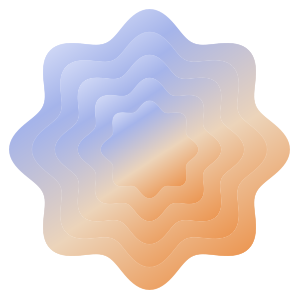
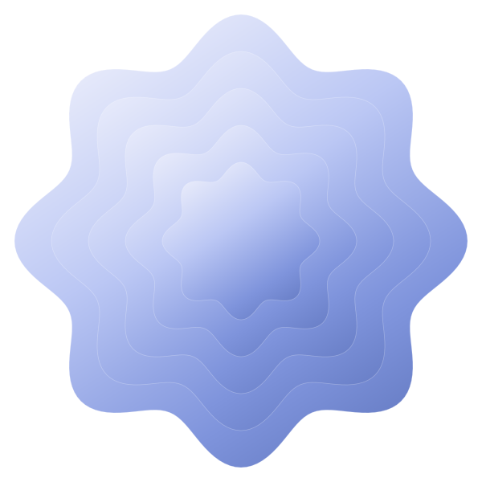
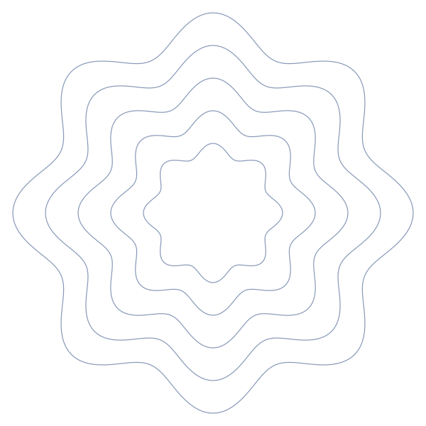
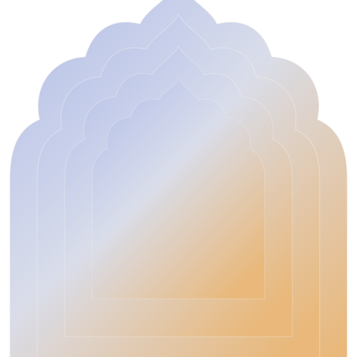

Space is the structure.
Wide margins and clear reading areas create the feeling of an open courtyard. Use typography and spacing to organize the page.
A personal design foundation / 01
Indian minimalism, expressed through space, type, and the quiet rhythm of repeating forms.
Inspired by Sarvam. Shaped for your own corner of the internet.

01 / The idea
Give the content a calm place to live.
Let the edges carry a little character.
Wide margins and clear reading areas create the feeling of an open courtyard. Use typography and spacing to organize the page.
A repeated curve becomes a layered gateway, a cropped corner, or a quiet divider. A shared construction keeps the app coherent.
Keep everyday screens mostly neutral. Give color to a project cover, an introduction, or a useful moment of discovery.
A personal interpretation of Indian minimalism: contemporary, spacious, and connected to architectural form. Your own stories, photographs, and language give it meaning.
02 / Color language
A warm neutral base, legible ink, and a cool-to-warm spectrum for the artwork. These are proposed Courtyard colors.
Download the paletteSelect a swatch to copy its hex value.
Color behaves like light. Mist → periwinkle → peach → orange. Reserve this spectrum for illustration; place reading content on solid surfaces.
#DDE6F2 → #9CAAF0
#EBC6B2 → #EA873D03 / The pattern library
Six editable SVGs built for this kit. Nested scallops and architectural openings carry the reference; a circle lattice and divider extend the family.



Your next chapter
A little space
for a new idea.
HeroOne motif, 280–480px. Keep the text measure clear.
CardCrop 35–55% at one edge. Put copy on the other side.
App shellA quiet side rail or footer. Keep inputs and tables plain.
ReadingA solid page. An optional small divider at the end.
04 / Typography
Instrument Serif gives headings a literary quality. DM Sans keeps everything you read, click, and navigate comfortably legible.
Room to think.
Space to build.
Keep the introduction simple. Say what you make, what you care about, and where someone should go next. Let your work provide the detail.
Both typefaces are bundled with their open-source licenses. Sarvam uses Season Mix and Matter; this pairing is the proposed alternative for your site.
05 / In use
The same family can frame a personal introduction, soften an app's empty state, and give a project its own cover.
Hello, I'm [your name].
A place for the things I'm building, the ideas I'm exploring, and the details I'm learning to notice.
Selected workA small, static motif brings warmth to a useful explanation and a clear next step.
Start with the briefReplace this example with a real project. Explain the problem, your contribution, and what changed. Put the visual character in the cover and the substance in the story.
A reading page should feel unhurried. A comfortable line length, clear paragraphs, and generous spacing let an idea hold your attention.
Use decoration at the transition between sections. Give the words the space in between.
06 / The practical rules
Use the same decisions across your website and app. Change the content and composition; keep the underlying rhythm.
4 / 8 / 16 / 24 / 48 / 96px.
1216px page · 640px reading width.
96px section gaps; 56px on mobile.
8px small controls · 24px cards.
Pill buttons, at least 44px high.
Thin borders and restrained depth.
180ms feedback · 320ms entrance.
A 6px rise with a gentle fade.
Respect reduced-motion preferences.
Ink, Stone, Indigo, and Clay exceed 4.5:1 on Paper and White. Keep decorative gradients separate from text.
Copy tokens.css, patterns.css, and their neighboring fonts/ and patterns/ folders into your app. Import the two stylesheets and apply semantic tokens to your components.
<section class="cy-pattern-panel">
<div class="cy-pattern cy-pattern--dawn"
aria-hidden="true"></div>
<h2>Your content goes here.</h2>
</section>
/* Tune the crop for this particular surface. */
.cy-pattern-panel {
background: var(--cy-surface);
color: var(--cy-text);
--cy-pattern-size: 62%;
--cy-pattern-right: -12%;
--cy-pattern-bottom: -38%;
--cy-pattern-opacity: .7;
}Use data-theme="dark" on the document root for evening mode. Decorative patterns stay out of the accessibility tree. Use one family per surface and keep forms, tables, and reading areas clear.